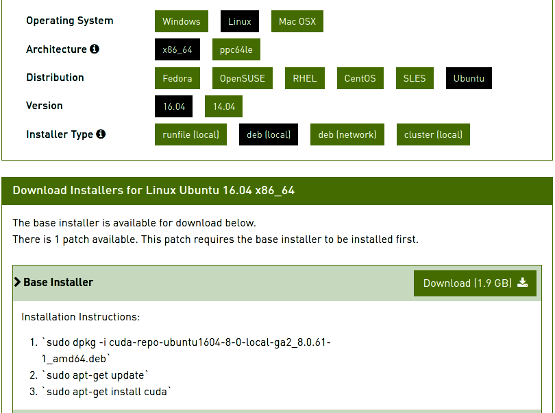
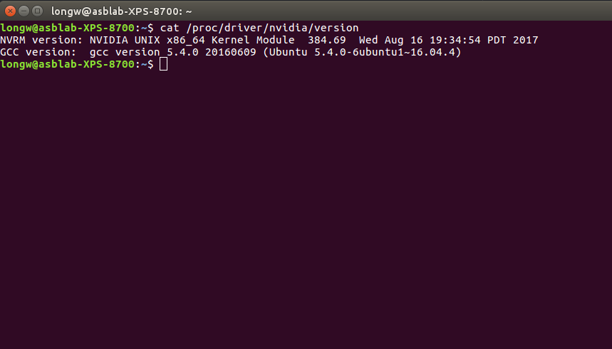

Deep learning setup for Ubuntu 16.04
Step 4: Install CUDA
1. Install here.
On the link, select your system and download appropriate package file. Then follow installation instructions:

2. Add libraries to .bashrc file:
echo 'export PATH=/usr/local/cuda/bin:$PATH' >> ~/.bashrc
echo 'export LD_LIBRARY_PATH=/usr/local/cuda/lib64:$LD_LIBRARY_PATH' >> ~/.bashrc
source ~/.bashrc
3. After sourcing bashrc file, the CUDA version can be verified using
nvcc -V
4. Verify that Nvidia driver is installed using following command.
cat /proc/driver/nvidia/version
The output should look like below:

Step 2: Prepare computer
1. sudo apt-get update
2. sudo apt-get upgrade
3. sudo apt-get install build-essential cmake g++ gfortran
4. sudo apt-get install git pkg-config python-dev
5. sudo apt-get install software-properties-common wget
6.
sudo apt-get autoremove
7.
sudo rm -rf /var/lib/apt/lists/*
Step 3: Install NVIDIA drivers
Make sure to install correct version of Nvidia driver. You can check your GPU version with
lspci | grep -i nvidia

Next, install from a proprietary repository of nvidia drivers.
sudo add-apt-repository ppa:graphics-drivers/ppa
sudo apt-get update
sudo apt-get install nvidia-xxx (use the correct version)